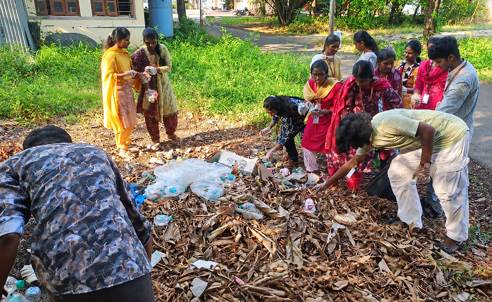

CLEANING & ENVIRONMENTAL AWARENESS SESSION
Campus Cleaning Drive
The activity encouraged students to take responsibility for their environment and highlighted the importance of maintaining clean and sustainable public spaces.